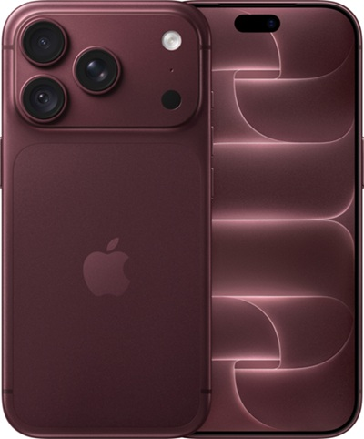

Смартфон Apple iPhone 18 Pro 1TB
Зовнішній вигляд

Основні характеристики
- Категорія:
- Смартфон
- Ціна:
- 117 999 ₴
- Дата випуску:
- Наявність:
- В наявності
- Стан товару:
- новий
- Торгова марка:
- APPLE
- Операційна система:
- iOS
- Версія операційної системи:
- 27
- Модельний ряд Apple:
- iPhone 18 Pro
Детальний опис
Зустрічайте новий Apple iPhone 18 Pro! Це не просто чергове оновлення, а суттєвий крок уперед у світі мобільних технологій. Завдяки новітньому процесору A20 Pro, виготовленому за 2-нанометровим техпроцесом, смартфон забезпечує високу продуктивність під час виконання складних завдань, роботи з графікою та запуску вимогливих 3D-ігор. 6-ядерний центральний процесор, 7-ядерний графічний процесор і вдосконалений Neural Engine також відкривають нові можливості для використання штучного інтелекту. Графічний процесор підтримує апаратне прискорення трасування променів, що забезпечує реалістичніше освітлення та відображення об'єктів в іграх.
Смартфон оснащений 6,3-дюймовим OLED-дисплеєм Super Retina XDR із роздільною здатністю 2622 × 1206 пікселів і технологією ProMotion, яка забезпечує адаптивну частоту оновлення до 120 Гц. Функція Always-On Display дає змогу переглядати важливу інформацію навіть тоді, коли екран заблокований. Водночас оновлена Dynamic Island стала функціональнішою та може одночасно відображати до трьох активних дій. Система Face ID забезпечує безпечне розблокування пристрою та підтвердження покупок.
Особливу увагу приділено можливостям камери. Основна камера Fusion на 48 Мп отримала змінну діафрагму, що дає змогу краще контролювати кількість світла, яке потрапляє на матрицю, і гнучкіше налаштовувати зйомку. Смартфон підтримує запис відео у форматі Dolby Vision 4K із частотою до 120 кадрів за секунду на основну камеру, а також професійні формати ProRes RAW та Apple Log 2. Це робить пристрій корисним інструментом не лише для повсякденної зйомки, а й для створення професійного відеоконтенту. Фронтальна камера Center Stage на 18 Мп забезпечує якісні фотографії та відеодзвінки.
Крім того, Apple iPhone 18 Pro отримав удосконалену систему охолодження з паровою камерою та оновлену конструкцію акумулятора. Поєднання енергоефективного процесора й оптимізації системи дає змогу збільшити час автономної роботи. За даними Apple, пристрій забезпечує до 34 годин відтворення відео, а моделі лише з eSIM — до 36 годин. Смартфон також підтримує швидке заряджання: приблизно до 50% за 15 хвилин за умови використання сумісного адаптера потужністю 60 Вт або більше.
Таким чином, Apple iPhone 18 Pro поєднує високу продуктивність, сучасний дисплей, розширені можливості відеозйомки та покращену автономність, залишаючись потужним інструментом для роботи, творчості й розваг.
Порівняння модифікацій
| Об'єм пам'яті | Рекомендоване призначення | Ціна |
|---|---|---|
| 256 GB | Базова версія для повсякденних задач та соцмереж | 77 999 ₴ |
| 512 GB | Оптимальний вибір для фотографій та середнього навантаження | 90 999 ₴ |
| 1 TB | Максимальна місткість для професійної зйомки відео (ProRes 4K) | 117 999 ₴ |